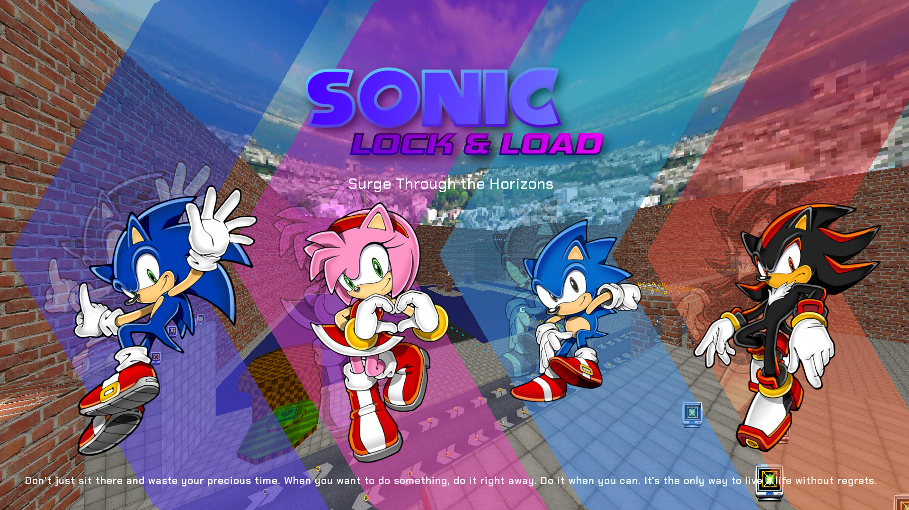

Welcome to Sonic: Lock & Load!
Sonic: Lock & Load is a FLOSS (free/libre and open source software) first-person shooter on the GZDoom source port based on the Sonic the Hedgehog series, using DOOM as a base. (In other words, it's a DOOM mod.)
Sonic: Lock & Load aims to provide a fun fast-action FPS experience with a sense of overwhelming power.
It's not really based on any Sonic game in particular, and rather seeks to incorporate elements from the series as a whole.
Releases
Chaos Update
Version 1.1
- Added the Spin Dash for Classic Sonic.
- Added persistent control hints in each characters' tutorials that make learning the controls easier.
Version 1.0
It's been a long, rough road, but we're finally here.
The long-awaited first release for Sonic: Lock and Load, the Chaos Update, is finally out!
So without further ado... Welcome to the next level.
Pre-releases
Dark Update (v0.9)
Dark Update! This has been one of my favourite updates to make! (wait till you see what's coming next, seriously, it's fricking crazy)
This update adds Shadow the Hedgehog! Will he find that damn fourth Chaos Emerald?
Also, I learned ACS!
- Added a taunt command which can be bound in the GZDoom settings.
- Caliburn now has a rotating attack outside of Super Sonic.
- New mugshot sprites for Amy.
- Hammer Jump is now triggered by crouching and pressing primary fire.
- Added Shadow the Hedgehog.
Rose Update (v0.8)
Oh boy! The Rose Update! This is probably the greatest addition to the mod in ages.
Furthermore, I changed the name of the project to 'Sonic: Lock & Load' as both a reference to His World from Sonic '06, and because I didn't want Sonic the Hedgehog in DOOM (commonly abbreviated as Sonic DOOM) to be confused with Sonic Robo Blast 2, a much better fan game made on a modified version of the DOOM Legacy source port, which can also be called Sonic DOOM.
- Added Amy Rose.
- Renamed Sonic's Eclipse Blaster to the "Eclipse Blaster Mk. V"
- New mugshot sprites for Sonic.
- Nerfed the Speedy Shotgun.
- Removed the tutorial.
Ascension Update (v0.7)
- Changed how the Boost works.
- Removed the Drift.
- Added an unarmed kick.
- DOOM II text screens reflect Sonic's dialogue and mimic Sonic Adventure 2's recap screens.
Eclipse Update (v0.6)
- Added the Eclipse Blaster.
- Changed how the Speedy Shotgun works.
- Drifting now recharges Chaos Energy.
- Weapon pickup messages now reflect Sonic's reactions.
Knight of the Wind Update (v0.5)
- Added Caliburn.
- Super Sonic now improves melee attacks.
- Replaced megaarmor with Soul Rings.
- Fixed small HUD.
- Updated skill levels.
Version 0.4
- Added the Speedforce Pistol.
- Changed the Speedy Shotgun's alt fire.
- Replaced armour bonuses with Chaos Rings.
- Added level time to the HUD.
Version 0.3
Includes a new custom HUD, heavier focus on melee combat and a new tutorial.
Version 0.2
This release has more DOOM II support over the previous release.
Version 0.1
This is the first in-development release of Sonic the Hedgehog in DOOM.